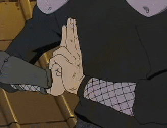
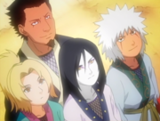

Hiruzen Sarutobi (猿飛ヒルゼン,
Sarutobi Hiruzen) was the Third Hokage (三代目火影, Sandaime Hokage, Literally meaning: Third Fire Shadow) of
Konohagakure. A disciple of the village's two previous Hokage, Hiruzen was a powerful ninja, hailed as a "God of
Shinobi". Though he was only ever directly the teacher of the Sannin, generations of Konoha shinobi benefited
from his wisdom during his lifetime.
Hiruzen Sarutobi (猿飛ヒルゼン,
Sarutobi Hiruzen) was the Third Hokage (三代目火影, Sandaime Hokage, Literally meaning: Third Fire Shadow) of
Konohagakure. A disciple of the village's two previous Hokage, Hiruzen was a powerful ninja, hailed as a "God of
Shinobi". Though he was only ever directly the teacher of the Sannin, generations of Konoha shinobi benefited
from his wisdom during his lifetime.
Background
Hiruzen was born the son of Sasuke Sarutobi. The Sarutobi clan was one of the first clans to settle in the
newly-created Konohagakure, where Hiruzen struck up a friendship with the Shimura clan's Danzō Shimura. Hiruzen
was part of the first generation of ninja produced by Konoha and he, Homura Mitokado, and Koharu Utatane were
placed under the tutelage of Tobirama Senju. Hiruzen early on displayed prodigious talent in the ninja arts,
earning him additional training from Hashirama Senju, the First Hokage; at the same time, Danzō became jealous
of Hiruzen's skills and started a one-sided rivalry in an effort to surpass him.
During
the First Shinobi World War, Tobirama, by that time the Second Hokage, led a team consisting of Hiruzen, Homura,
Koharu, Danzō, Kagami Uchiha, and Torifu Akimichi. During a mission they started to be pursued by Kumogakure's
Kinkaku Force, an enemy that somebody would need to distract and inevitably die at the hands of in order for the
rest of the team to escape. Hiruzen volunteered to be the decoy, boasting that, as the strongest of their group,
he stood the best chance of surviving the encounter; nevertheless, he asked Danzō to look after the others.
Tobirama volunteered himself instead, and before going to his death he appointed Hiruzen as Third Hokage.
In the anime, Hiruzen permitted Danzō to create Root - a more ruthless subdivision of the Anbu under Danzō's
exclusive control - shortly after he became Hokage in order to balance the shortcomings of his empathetic rule.
For years he had ignored Root's questionable foreign ops, its abduction of children, and the actions it took
against Konoha personnel, Hiruzen included.
At some point, Hiruzen married
Biwako and they had a son, Asuma, and at least one other child who became an Anbu. Hiruzen also started leading
his own team of new Academy graduates consisting of Jiraiya, Orochimaru, and Tsunade. Although he was close with
all of his students, Hiruzen had the highest hopes for Orochimaru, a genius like himself who, after the deaths
of his parents, was only further motivated to have a deep impact on the world. Hiruzen led Konoha's forces
through the Second and Third Shinobi World Wars; in the anime, his choosing to end the Third Shinobi World War
by signing a peace treaty with Iwagakure despite the losses Konoha suffered incensed Danzō, prompting Hiruzen to
step down as Hokage against the village's protests.
Hiruzen had long hoped that Orochimaru would succeed him as Hokage but, despite his best efforts, he could never
convince him of the Will of Fire: that Konoha was a family that the Hokage had to risk everything to keep safe.
Unable to choose Orochimaru, Hiruzen considered Jiraiya as his successor, but Jiraiya did not believe he was
responsible enough. Hiruzen ultimately settled on Jiraiya's former student, Minato Namikaze, who had proven
himself time and again during the Third Shinobi World War. Hiruzen assisted Minato with the transition of power
by advising him on how to handle individuals and other village matters. He even retained some of his own Anbu,
several of which he assigned as security while Kushina Uzumaki, the jinchūriki of the Nine-Tails, gave birth.
>Previous Page
>Home Page